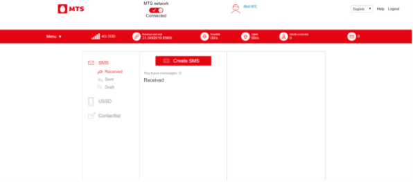

User guide for 4G Wi-Fi modem 81231FT
Device appearance and controls description
Appearance

1. Protective cap of the USB connector
2. USB connector
3. Slot for microSD memory card
4. MTC SIM card slot
5. Connector for external antenna
6. Mobile network status indicator / Wi-Fi network indicator
Indication
1. Solid red - the SIM card is not installed, defective, or the connection to the mobile network is not established at the moment.
2. Solid blue - a connection to the mobile network is established, but data transfer is disabled
3. Blinking blue - a connection to the mobile network is established, data transmission is on
4. Solid green - WI-Fi is on, but no clients are connected
5. Blinking green - WI-Fi is on and there are clients connected
6. Lights up or blinks blue - Wi-Fi network and mobile network are used for data transfer
How to use 4G Wi-Fi modem
To install the modem, follow the steps below. It will help you to make sure you did everything correctly.
Getting Ready
Step 1. Installing SIM/USIM card
- Remove the back cover.
- Insert SIM/USIM-card following the specified direction. If necessary, insert micro-SDHC card following the specified direction.
Make sure that the SIM/USIM card and memory cards correctly installed in the appropriate slots.
Attention!
Proper work of modem and its software guaranteed only if you use SIM/USIM cards provided by «МТS».
- Install back cover.
SSID and wireless key
Information about the Wi-Fi network name (SSID) and password is placed on a sticker under back cover. This information is necessary if you plan to connect to the modem using Wi-Fi network.
Note: It is recommended to change SSID and wireless network key settings in the Web User Interface.
Step 2. Connecting
Wi-Fi devices (such as smart phones, tablets, game consoles or personal computers) can connect to the internet using 4G Wi-Fi modem 81231FT. Connection process depend on operating system of Wi-Fi device and the PC. To establish connection, follow the instructions in the user manual of the connecting device. To access the Internet through the USB-connection, install the 4G modem driver, following the instructions of the PC operating system.
Method 1: Connecting single device via USB cable
- Make sure that your 4G Wi-Fi modem is connected to USB.
- Operating system of your PC will automatically recognize your modem and run Install wizard.
In case of a correct installation, the connection to the Internet will be established automatically.
Method 2: Connecting multiple devices via Wi-Fi
Attention! Device support up to 10 multiple connections at the same time.
- Connect your device to USB port.
- Search for available wireless networks on the device you want to connect to the modem.
Note: It is required to set Automatic IP in settings of connected device.
- In the list of wireless networks find and select the name (SSID) of necessary network. 4G Wi-Fi modem 81231FT has the following name format: MTS81231FT_XXXX, where XXXX means a unique set of symbols for each modem.
- Enter the password to connect to the wireless network.
- After successfully connection to the modem, open a browser on your device and type in the address bar http://connect.manager/ or http://192.168.1.1 to access the Web management interface of 4G Wi-Fi modem. To access 4G Wi-Fi modem's settings you need to enter username and password on the login page. Default username – admin. Default password – admin. Enter this information and click «Login».
Note: You can rewrite or remember the name (SSID) of the wireless Wi-Fi network and password. You will need this data if you plan to connect to the modem via a wireless Wi-Fi network.
Step 3. Install the software
In case you connect the modem to the PC, to access the web interface of the modem you will need to install additional software on your computer.
Computers running under the operating system Microsoft ® Windows ®
Installing the software of 4G Wi-Fi modem 81231FT will start automatically from a certain time after connecting device into the USB port. Wait while installation program starts and follow the prompts. During installation, do not disconnect your modem from a PC. If the automatic installation of the application does not start, perform the installation manually:
- Open «My Computer». For this make a double-click on icon
 («My Computer») on your desktop. If the icon «My Computer» is absent on desktop, click the button
(«My Computer») on your desktop. If the icon «My Computer» is absent on desktop, click the button  («Start») in the lower left corner of the screen and find in the pop-up menu item «My Computer».
(«Start») in the lower left corner of the screen and find in the pop-up menu item «My Computer». - In appeared window «My Computer» open the disc with title «4G Wi-Fi модем». On some computers due to security settings disc name may not be readable. If there is no such disk with title «4G Wi-Fi модем» in window «My Computer», open a newly added external drive (for example, «CD-Drive (Е:)» ).
- In the opened window, locate the file «Autorun.exe» and run it.
- Follow the installation prompts and do not interrupt the connection with PC.
Note: for OS Windows 8 and Windows 10 installation is performed in similar way.
Computers running under the operating system Apple Mac OS X
By default, the modem will connect automatically.
You can also follow these steps to install:
- Open the disk «4G Wi-Fi модем», which appears when you connect the modem to your Mac among of shortcuts on the desktop.
- In case of absence the disk «4G Wi-Fi модем» on your desktop, click on the keyboard Shift-Cmd-A simultaneously, after that at the left side of opened window in «Devices» select the disk «4G Wi-Fi модем».
- In opened window locate the setup file «4G Wi-Fi модем.pkg» and run it.
- Follow the installation prompts and do not disconnect your 4G Wi-Fi modem from Mac.
Web User Interface of 4G Wi-Fi modem 81231FT
Open the web interface of the 4G Wi-Fi modem 81231FT. To do this, connect the PC to the modem via USB or Wi-Fi and in the Windows system, find the icon on the desktop of your computer and double-click on it with the mouse.
Note!
if there is no icon on your desktop or in the Quick Access Toolbar for some reason, the web interface can be accessed by typing in browser following IP-address: http://192.168.1.1 or a web page: http://connect.manager/.
Authorization
To access 4G Wi-Fi modem's settings you need to enter username and password on the login page. Default username – admin. Default password – admin. Enter this information and click «Login».
Home page
Contains links to all sections, as well as information about the current status of the modem, network, etc. From the home page you can connect to the Internet and go to any of the sections of the web interface of 4G Wi-Fi modem 81231FT. Also, home page displays current connection status and data transfer speed. If the Internet connection is not established, press the button MTS Network – Disconnected to connect. If Internet connection is already established, but you want to disable it, click the button MTS Network - Connected.
Web interface appearance of the main page of Connect Manager
Status bar, language bar, button «Logout»
The status bar displays the current status of SIM/USIM card, current mobile network type, signal strength, number of connected via Wi-Fi network clients, data-transfer rate and also displays information about received SMS-messages.
Language bar allows you to quickly switch language of the Web UI.
«Logout» button allows you to exit from Web UI and return back to login page.
Access to additional settings and options, available from corresponding menu.
Messages
Messages section allows you to read, send and delete SMS-messages. Your SMS messages are stored in device memory.

Read/Reply/Forward
To read an incoming message (as well as to answer on it or forward), click on the message header (Messages->SMS->Received). A dialog box will appear with the text message.
Create a new message
If you want to create a new message, click the button Create Message (Messages -> SMS -> Create SMS) It will open an additional window with two fields – one is recipient phone number, and another is text message field. When you finish creating a message, click the Send button to send a message.
Delete
To remove a message, put a mark in the opposite side of selected message (Messages -> SMS -> Received) and click trash can icon.
USSD Service

USSD command can be used for sending USSD commands. To send a USSD command enter the USSD-command in the appropriate field and click the button Send. The system will notify you about the status of your request. In this section the following example operations are available to you:
*100# balance check – allows you to check the current status of your balance.
*111*59# tariff check – allows you to check current tariff.
*111*0887# show my number – shows your mobile phone number.
Note:
USSD section is not available when 4G modem is registered in LTE network 4G-LTE Only, 4G-TDD Only, 4G-FDD Only and 3G-Only. To use the USSD-commands, switch to 3G or Automatic modes (Settings -> Switched Connection -> Network Selection). To change the network mode, you need first disconnect from the Internet.
Contactlist
In this section you can create and delete your contacts. Also in this section it is available to send SMS messages to the selected contact.
New contact
To create a contact in section Contactlist (Messages -> Contactlist) in Add contact subsection, fill in all necessary information about contact and click the Add button. After this contact will be displaying in section Contactlist.
Delete/Delete all
To delete a contact, put a mark in front of the contact's name and click trash can icon. After this contact will be deleted. To delete all contacts at once, select all contacts and click trash can icon.
Send message
To send a message, put a mark in front of the contact's name and click the envelope icon. In the appeared window type a message and click the button Send.
Note:
4G Wi-Fi модем 81231FT allows to save contacts in device memory or on SIM/USIM- card. Select the desired storage area when creating contacts.
Settings Section
This section is designed to control the modem. Here you have the following settings:
Quick Setup
Using this configuration wizard, you can quickly configure the basic parameters of the device (SSID, Wi-Fi Security Mode).
Wi-Fi Settings
Allows you to configure parameters of Wi-Fi network.
Firewall
In this section you can specify filtering rules for ports, configure port mapping and also activate or deactivate DMZ function.
Device Settings
This section allow to control next functions: Web UI Account Management, SIM/USIM-card PIN Management, you can also perform Reset and Restart functions, Update SW (if there is new SW version exists), configure Power Save function.
Modem Settings
Here you can set necessary parameters of the local network of the device (IP Address, Subnet Mask and so on).
Information
In this section you can get device information.
Note:
4G Wi-Fi modem 81231FT is already configured for «MTS» network. Do not change network settings unnecessarily. Incorrect network settings can cause internet connection fails.
Examples of changing some settings
Menu -> Settings -> Dial-up connection -> Network selection
This section provides options for selecting the network mode.
Network selection: Automatic or Manual.
The default is Automatic. If you select the Manual mode and click the Search button, a search will be carried out for working mobile networks, as a result of the search, a list will be displayed with which you can manually register in the operator's network with the Available status. The following options are available for automatic network selection:
Network selection: Auto, 4G only, 4G-TDD only, 4G-FDD only, 3G only.
The default is Auto. If you need the device to work only in one of the modes: only 4G, only 4G-TDD, only 4G-FDD or only 3G, select the corresponding option.
To change these settings, you must first disable the active connection to the MTS network (move the MTS network switch to the Disabled position). After completing the settings, do not forget to reconnect to the MTS network (move the MTS Network switch to the Connected position)
Menu -> Settings -> Dial-up connection -> APN
If you feel it is necessary, you can manually set the data for the new APN by selecting the Manual mode.
After that, click on the Add button and fill in all the fields.
To activate the created APN profile, click the Save and apply button.
To select a default profile, go to Auto mode and click Apply.
After completing the settings, do not forget to reconnect to the MTS network (move the MTS Network switch to the Connected position).
Menu -> Settings -> Wi-Fi Settings -> Black list
In this section, you can create policies for connecting external devices via Wi-Fi: prohibit the Wi-Fi modem from connecting external devices with specific MAC addresses.
Enable the MAC address filter feature by moving the Access Control switch to the On position and clicking Apply.
In the window that opens, in the lower list, we see the MAC addresses of devices that are currently connected to the modem.
If you click on the Block button next to one of the connected devices, then it will move to the upper list and will not be able to connect to the Wi-Fi modem in the future.
To remove the ban on connection, just click on the Delete button next to the blocked device.
You can also enable blocking of an arbitrary device by entering its MAC address manually in the MAC address field. Next, click the Apply button under the MAC address input field.
Attention!
The information contained in this manual may be changed without additional notice. Despite the measures taken to ensure accuracy of the contents of this document, all information contained here, also as statements and recommendations do not constitute any warranty, express or implied. For the purpose of proper and safe operation of your device, please read the safety instructions described in this manual.